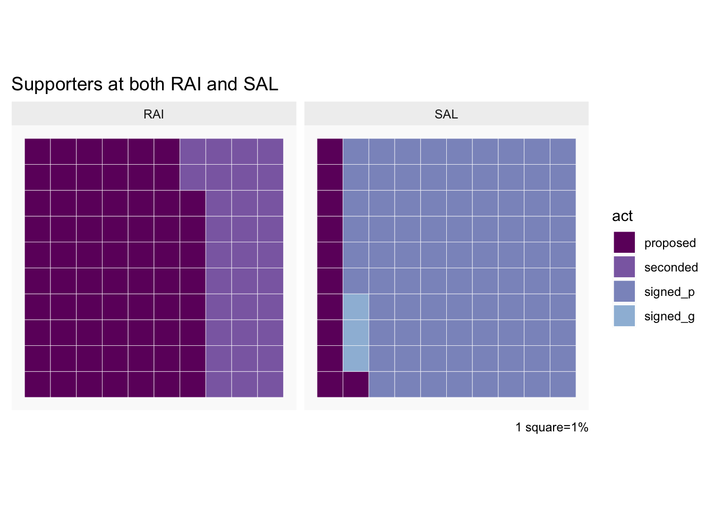
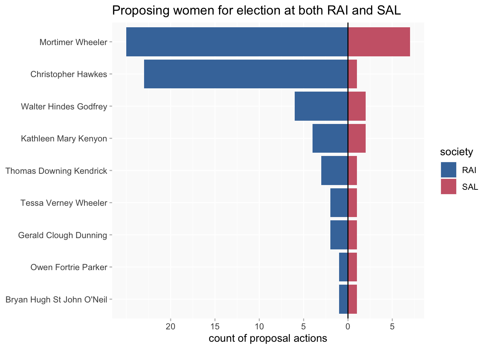
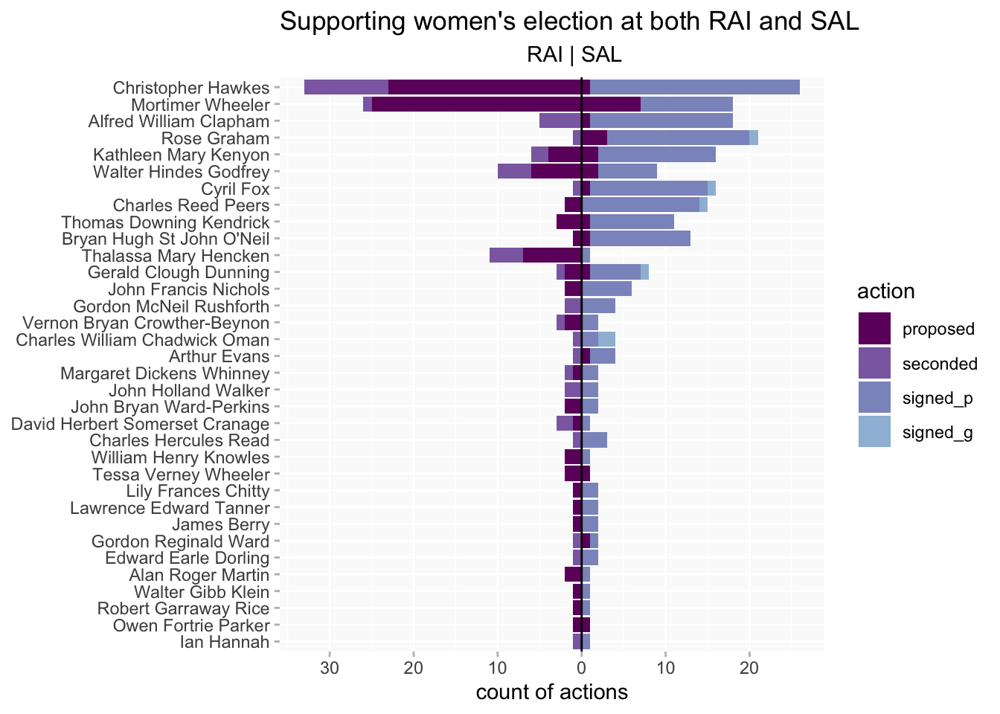
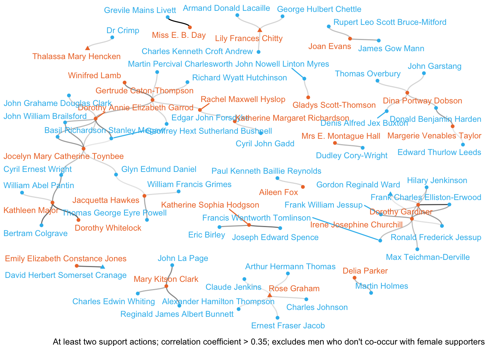
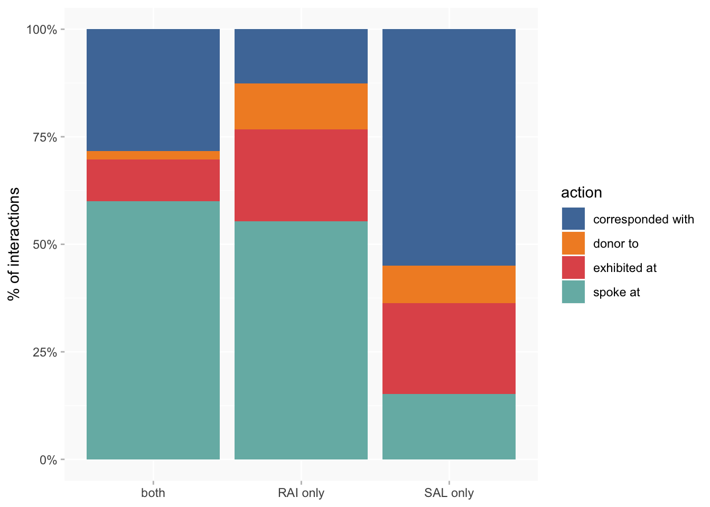

Connecting SAL and RAI
RAI
SAL
Election supporters and women’s engagement with both SAL and RAI
Wikibase queries
SAL and RAI trends in female fellows/members
SAL
RAI
update: added RAI 1901-1940 sample from membership lists. It’s easy to use titles and full names to assign gender to men and women, but I don’t know whether initials-only names (of which there are a lot) can be assumed to be male.
Comparison of SAL and RAI election supporters
Support actions
- proposed (SAL and RAI)
- seconded (RAI)
- signed personal (SAL)
- signed general (SAL)
A few supporters whose gender can’t be determined from their signatures have been excluded.
For scale:
However, most of the SAL activity is the large number of signers.
With support types:
Proportional version
This doesn’t look very different if restricted to people who support at both SAL and RAI, except the considerably lower % of SAL general signers (which may or may not be interesting).

Breakdown by gender of supporters
Supporters at both societies
People who propose at both societies form a very small group.
(Ordered by overall number of proposals.)

Expanding to all support actions
[RAI to the left, SAL to the right. this needs better labelling]

Supporter networks
This includes all the supporters from both societies. (People who support for both are shown with a triangle rather than a circle; I’m thinking about a way to make this a bit less subtle…)
NB that some men who are heavily represented above are omitted here; this is probably because they don’t reach the statistical correlation threshold and/or because they only support with other men. (Unless I’ve screwed something up.)

Women engaging with both societies
Same types of engagement (and sources) as previous posts
- corresponded with
- donor to
- exhibited at
- spoke at
20 women engaged with both societies.
This is not symmetrical: about 30% of women who engaged with RAI also engaged with SAL; but only 13% of women who engaged with SAL also engaged with RAI. Probably reflects the narrower subject area of RAI compared to SAL (I assume we’d see something similar for (eg) RHS if we had that data).

With breakdown by engagement types.
Comparison of engagement with one or other of the societies versus both.
